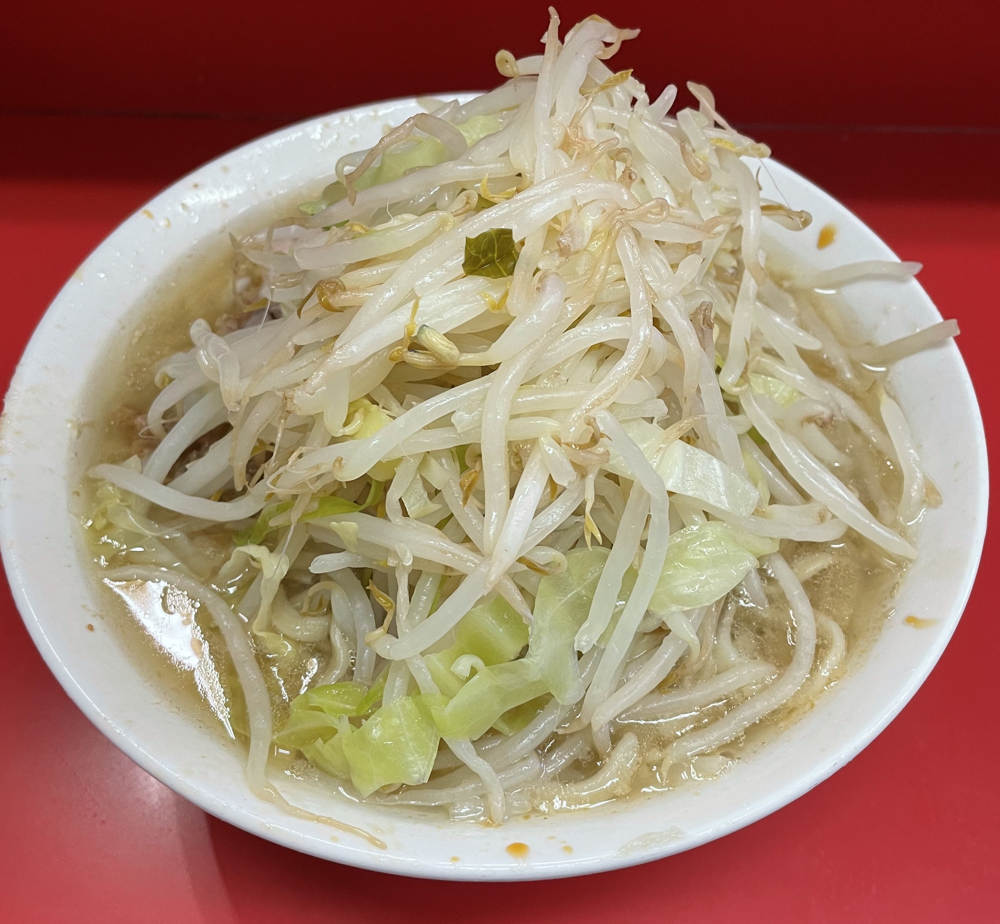

Jiro Ramen

Ingredients
For Soup
- PRE BOILED PORK BONES 400g
- PRE BOILED PORK BACKBONE 500g
- WATER 3L
- PORK SPARE RIBS 3pcs
- WATER 500ml
- PORK FAT 1pc
- MINCED PORK FAT 200g
- WATER 500ml
For Noodles
- WATER 105ml
- KANSUI 4g
- SALT 4g
- FLOUR 250g
- SEMOLINA 50g
For Topping
- BOILED PORK FAT
- CABBAGE
- BEAN SPROUT
- GARRIC
- CHASHU
How to cook
For Soup
- Add Pre Boiled Pork Bones, Pre Boiled Pork Backbone, Pork Spare Ribs and Water into a large pot
- Start stove at strong fire to boil
- Once soup start to boil, remove scum
- Switch to low fire and continue to simmer for 90min
- Remove Spare Ribs from pot
- Add Water 500ml, Pork Fat and Minced Pork Fat into the soup
- Change to strong fire
- When soup is boiling, cover and continue to boil 40min
- After 40min, add more Water 500ml into pot
- Cover again and boil 40min more
- Remove Pork Fat from soup
- Stop fire
- Strain the Soup. Soup is done
For Noodles
- Mix with Water, Kansui and Salt
- Add kansui mix into Flour and Semolina and stir
- Use a roller to press into a smooth flat dough
- Using a noodle machine, make flat and long roll of dough
- For Jiro-Style ramen use thick noodles
- Noodles are done